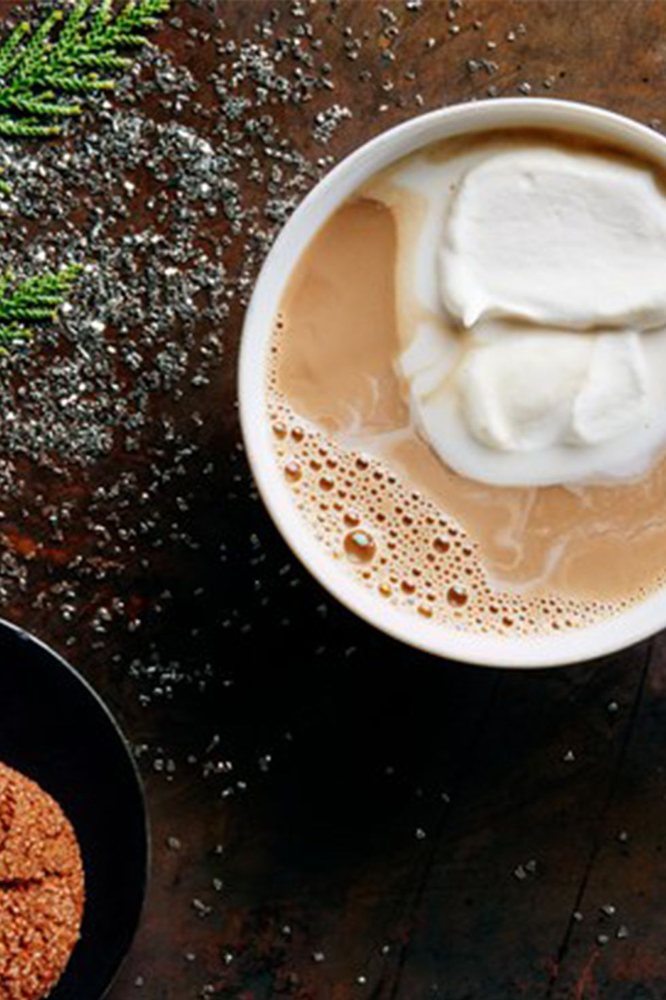

What Russian cocktail would be complete without copious amounts of vodka?
This cocktail is certainly not for the lactose intolerant, as it's roughly equal amounts of coffee, cream, and liquor.
What You'll Need
- 3 oz hot coffee
- 2 oz heavy cream
- 1 oz Kahlua
- 1 oz vodka
- Whipped Cream
Fill your glass about ½ with hot coffee. Add the cream, Kahlua, and vodka, then garnish with whipped cream.
Shout "God Save the Tsar!" and then down the drink and make another.